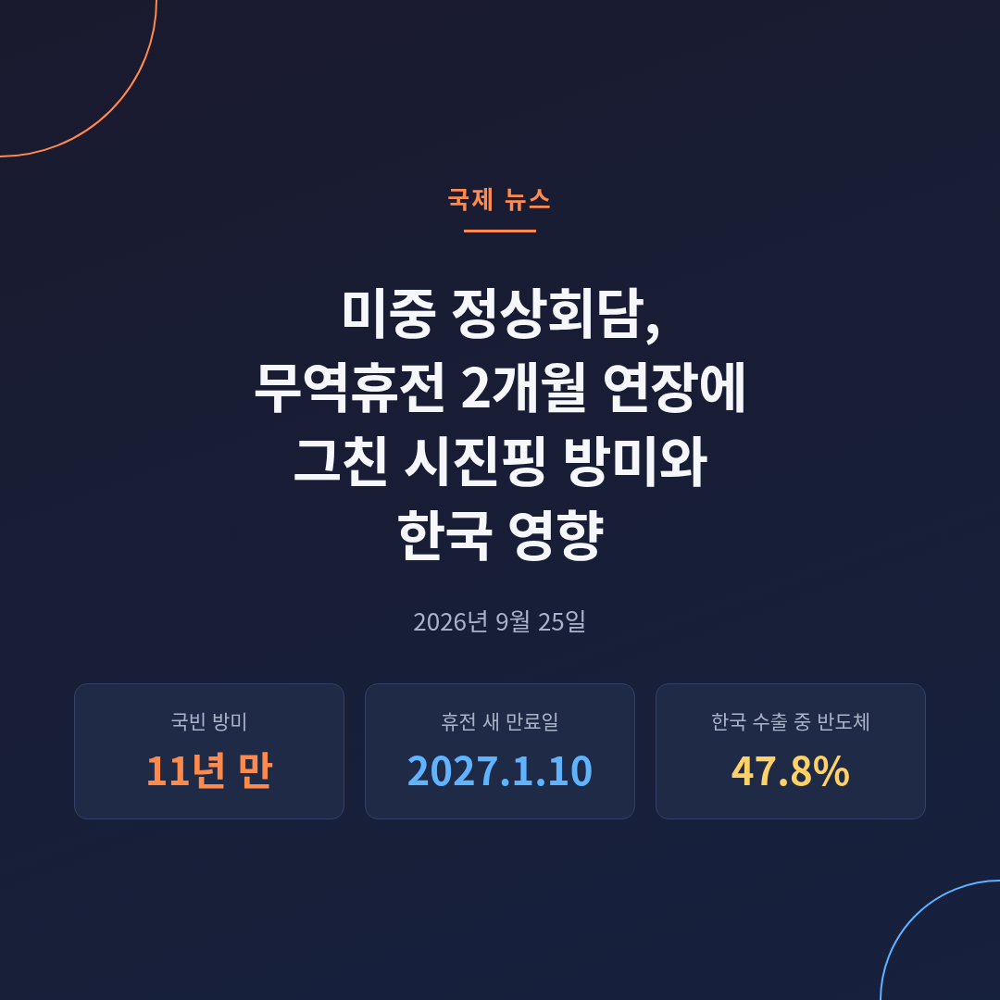
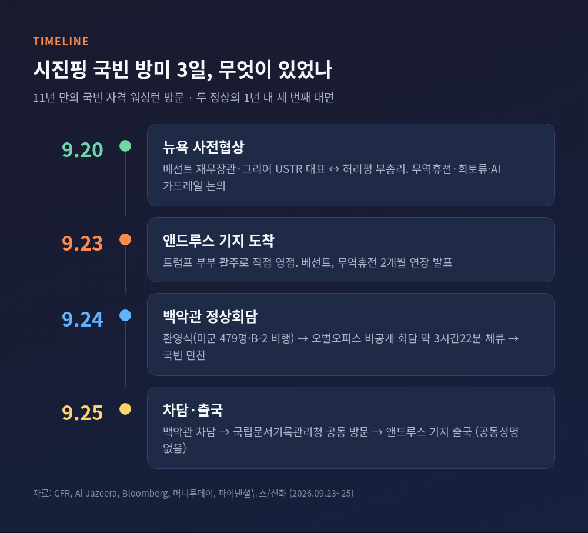
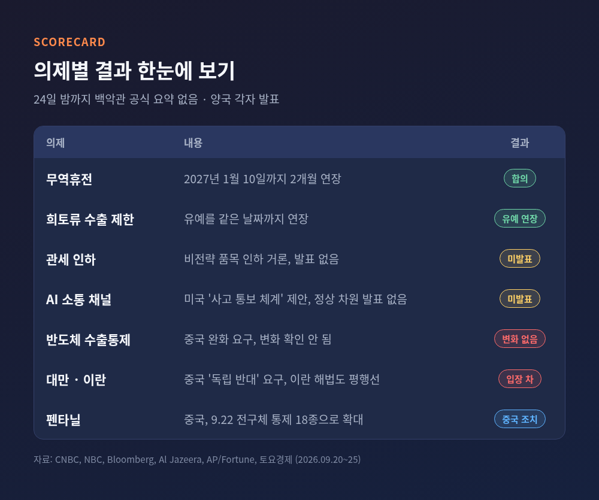
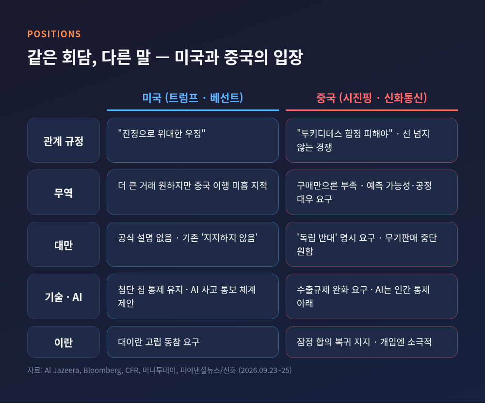
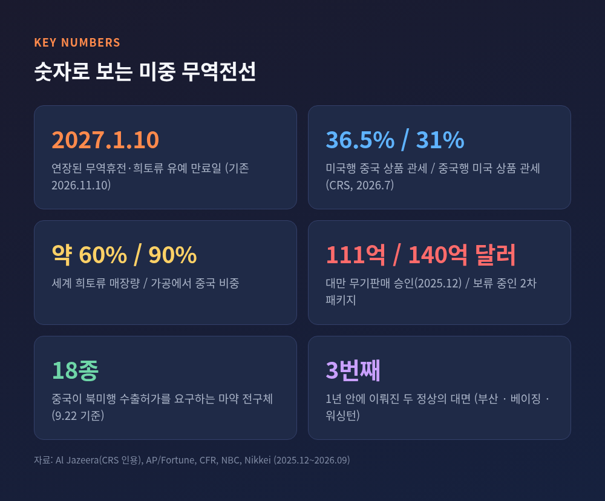
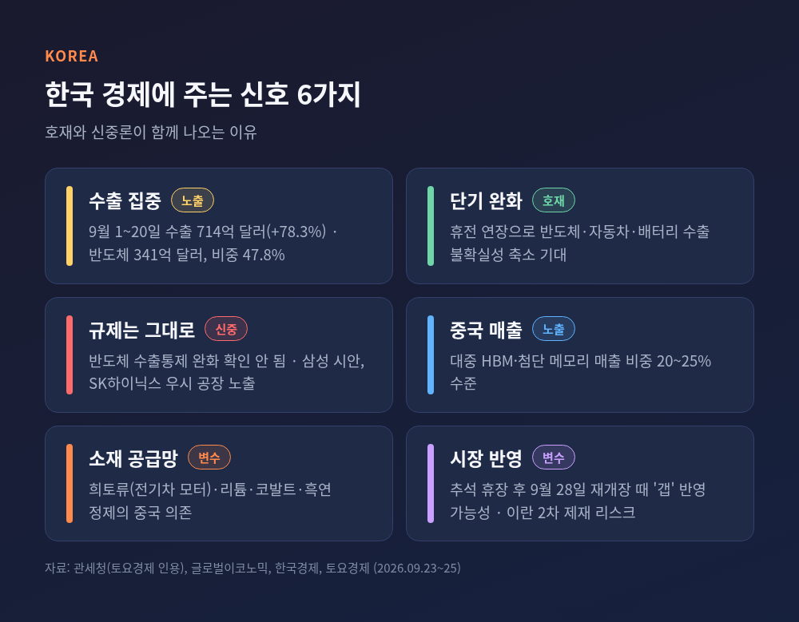
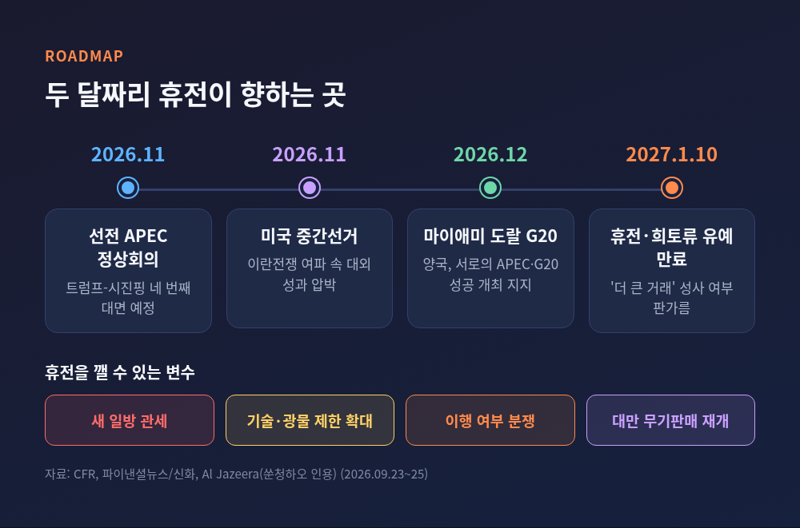

미중 정상회담, 무역휴전 2개월 연장에 그친 시진핑 방미와 한국 영향

이번 글에서는 9월 23~25일 열린 시진핑 중국 국가주석의 워싱턴 국빈 방문과 미중 정상회담을 정리해 보겠습니다.
무엇이 합의됐고 무엇이 비어 있는지, 양측은 서로 어떤 말을 했는지, 그리고 한국 반도체와 수출에는 어떤 신호인지 차례로 살펴봅니다.
3줄 요약
- 시진핑은 11년 만에 국빈 자격으로 백악관을 찾았고, 트럼프는 공항까지 나가 맞았습니다. 1년이 안 되는 사이 세 번째 대면입니다.
- 손에 잡히는 성과는 회담 전날 발표된 무역휴전 연장뿐입니다. 11월 10일 만료 예정이던 휴전이 2027년 1월 10일까지 두 달 늘었습니다.
- 관세 인하, AI 소통 채널, 반도체 통제 완화는 발표되지 않았고, 대만·이란에서는 입장 차가 그대로 남았습니다.

무슨 일이 있었나 — 성대한 의전, 짧은 발표문
시진핑 주석은 9월 23일(현지) 저녁 메릴랜드 앤드루스 합동기지에 내렸습니다.
트럼프 대통령 부부가 활주로에서 직접 맞았습니다.
Al Jazeera는 미국 대통령이 이 기지에서 외국 정상을 몸소 영접한 것이 60여 년 만이라고 전했습니다.
국빈 자격의 워싱턴 방문은 2015년 오바마 행정부 이후 11년 만입니다.
두 정상의 대면은 지난해 10월 부산, 올해 5월 베이징에 이어 세 번째입니다.
5월 트럼프의 베이징 국빈 방문에 대한 답방이기도 합니다.
24일 백악관 환영식에는 미군 479명과 군악대 4개가 동원됐고, 상공에는 B-2 스텔스 폭격기가 날았습니다.
오벌오피스 회담은 비공개로 진행됐습니다.
시 주석은 오전 10시7분 백악관에 도착해 오후 1시29분 떠났습니다. 체류 시간은 약 3시간22분입니다.
저녁에는 국빈 만찬이 열렸습니다.
25일에는 백악관 차담과 국립문서기록관리청 방문을 끝으로 일정을 마무리하는 순서입니다.
눈에 띄는 것은 형식입니다.
공동 기자회견도, 공동성명도 없었습니다.
양국은 각자 자국민을 향한 발표를 따로 내는 방식을 택했습니다.
트럼프 대통령은 "매우 좋은 회담이었다"고만 했고, 24일 밤까지 백악관의 공식 회담 요약은 나오지 않았습니다.
가장 큰 성과는 회담 전날 나왔다 — 무역휴전 2개월 연장
손에 잡히는 결과는 정상이 마주 앉기도 전에 발표됐습니다.
시 주석의 전용기가 착륙할 무렵, 스콧 베선트 재무장관이 무역휴전 연장을 알렸습니다.
지난해 10월 부산 합의로 시작된 1년짜리 휴전은 11월 10일 끝날 예정이었습니다.
이것이 2027년 1월 10일까지 두 달 늘었습니다.
중국산 희토류 수출 제한 유예도 같은 날짜까지 이어집니다.
사전 작업은 9월 20일 뉴욕에서 있었습니다.
베선트 장관과 제이미슨 그리어 무역대표부 대표가 허리펑 중국 부총리와 종일 일정의 협상을 벌였습니다.
베선트 장관은 연장 이유를 "경제 분야에서 무엇을 할 수 있을지 시간을 더 확보하기 위해서"라고 설명했습니다.
동시에 "더 큰 거래"가 가능할지는 불확실하다고 했고, 중국이 휴전의 일부 이행 사항을 지키지 않았다고도 지적했습니다.
중국 측 설명은 결이 조금 다릅니다.
신화통신에 따르면 시 주석은 양국 경제무역팀이 새로운 협의를 거쳐 "새로운 합의"를 도출했다고 밝혔습니다.
기대를 모았던 항목은 비어 있습니다.
Bloomberg는 24일 저녁까지 관세 인하 합의와 새 AI 소통 채널이 발표되지 않았다고 보도했습니다.
홍콩 증시의 중국 종목은 하락했습니다. 시장은 진전이 부족하다고 읽은 셈입니다.

의제별로 보면 — 관세부터 펜타닐까지
관세. 트럼프 2기 출범 직후 시작된 관세 전쟁은 한때 세율이 150% 선을 향해 치솟다가 협상을 위해 멈췄습니다.
미 의회조사국 7월 보고서 기준으로 미국행 중국 상품의 관세는 36.5%, 중국행 미국 상품은 31%입니다.
이후 미국은 강제노동 문제를 들어 중국을 포함한 60개 교역국에 12.5% 관세를 새로 매겼습니다.
비전략 품목 관세 인하가 거론됐지만, 이번에는 발표로 이어지지 않았습니다.
구매 약속. 5월 베이징 회담 때 백악관은 중국이 보잉 항공기 200대 구매를 승인했고, 2026~2028년 매년 최소 170억 달러어치 미국산 농산물을 사기로 했다고 밝혔습니다.
중국 쪽 시각은 다릅니다.
칭화대 쑨청하오 연구원은 추가 구매만으로는 관세·기술 제한·시장 접근의 불확실성을 무한정 메울 수 없다고 말했습니다.
희토류. 중국은 세계 희토류 매장량의 약 60%, 가공의 약 90%를 쥐고 있다고 평가됩니다.
지난해 일부 품목 수출을 묶었고, 추가 제한을 예고했다가 부산 휴전으로 유예했습니다.
전문가들은 이것이 폐기가 아니라 "보류"라는 점을 강조합니다.
기술 수출통제와 AI. 중국은 방미 전후로 자국 AI 칩과 모델을 잇따라 내놓았습니다.
시 주석은 첨단 칩 수출규제 완화를 원하지만, 사전협상 의제에조차 고성능 AI 칩 통제는 오르지 않았습니다.
AI에 대해 미국은 국가안보급 사고가 나면 서로 알리는 "통보 체계"를 제안했습니다.
시 주석은 "AI는 언제나 인간의 통제 아래 있어야 한다"며 경쟁보다 협력할 이유가 더 많다고 했습니다.
펜타닐. 중국은 회담 이틀 전인 9월 22일, 미국·멕시코·캐나다로 수출할 때 허가가 필요한 마약 전구체를 2종 추가했습니다.
통제 대상은 18종이 됐습니다.
부산과 베이징 회담 직후에도 목록을 넓혀 온 흐름의 연장선입니다.
펜타닐 관세는 지난해 20%에서 10%로 내려갔는데, AP는 올해 2월 미 연방대법원이 이 관세를 무효화했다고 전했습니다. 현재 적용 상태는 보도마다 서술이 엇갈립니다.
군사 대화. 군 대 군 소통 확대가 가능한 합의로 거론됐지만, 실제 발표는 확인되지 않았습니다.
신화통신은 두 정상이 한반도·중동·우크라이나 정세에 대해 의견을 나눴다고만 전했습니다.
같은 회담, 다른 말 — 대만과 이란에서 드러난 간극
대만은 가장 날카로운 지점입니다.
신화통신에 따르면 시 주석은 미국이 대만 독립에 "반대"하는 올바른 입장을 지키고, 대만 문제를 신중히 처리하라고 요구했습니다.
미국의 기존 공식 표현은 독립을 "지지하지 않는다"입니다. 한 단어 차이지만 무게는 다릅니다.
백악관은 대만에 관한 자체 설명을 내지 않았습니다.
무기판매도 얽혀 있습니다.
미국은 지난해 12월 사상 최대인 111억 달러 규모의 대만 무기판매를 승인했습니다.
그러나 약 140억 달러 규모의 두 번째 패키지는 5월 이후 보류돼 있습니다.
트럼프 대통령은 무기판매를 "아주 좋은 협상 카드"라고 부른 바 있습니다.
이란 문제에서도 접점은 없었습니다.
2월 시작된 미국·이스라엘의 이란 전쟁으로 호르무즈 해협이 막히고 에너지 가격이 치솟았습니다.
미국은 이란 최대 교역국인 중국에 대이란 고립 동참을 요구해 왔습니다.
시 주석은 미·이란이 잠정 합의로 돌아가는 것을 지지한다고 했을 뿐, 한발 물러선 태도를 유지했습니다.
말투에서도 온도 차가 보였습니다.
트럼프 대통령은 "진정으로 위대한 우정"을 강조했습니다.
시 주석은 신흥 강국과 기존 강국의 충돌을 뜻하는 "투키디데스의 함정"을 피해야 한다고 말했습니다.
그리고 경쟁은 "선을 넘지 않는 건전한" 것이어야 한다고 덧붙였습니다.

평가는 엇갈린다 — "임시 모래주머니"와 "유용한 중간 단계"
비판적인 시각이 우세합니다.
국제거버넌스혁신센터(CIGI)의 아이나 탕겐은 2개월 연장을 "구조적 홍수를 막는 임시 모래주머니"에 비유했습니다.
프랑스 ESSEC의 필리프 르코르 교수는 연장 기간이 점점 짧아지는 것 자체가 공통 기반을 찾지 못했다는 뜻이라고 봤습니다.
미국외교협회(CFR)의 제임스 린지는 관료 차원의 사전 작업이 부족해 큰 합의는 어렵다고 진단했습니다.
미국 정치권의 반응도 초당적으로 차갑습니다.
공화당 로저 위커 상원의원은 이렇게 성대한 환대는 권하지 않았을 것이라고 했습니다.
민주당 크리스 밴홀런 상원의원은 권위주의 지도자에게 호의를 베풀면 뜻대로 된다는 착각이라고 비판했습니다.
반대편 목소리도 있습니다.
칭화대 쑨청하오 연구원은 이번 연장을 "유용한 중간 단계"로 평가했습니다. 양측 모두 긴장 완화를 지키려 한다는 신호라는 것입니다.
공화당 랜드 폴 상원의원은 "말은 더 많이, 전쟁은 더 적게"라며 대화 자체를 반겼습니다.
결국 이번 회담은 무엇을 풀었느냐보다, 무엇을 터뜨리지 않았느냐로 읽는 편이 정확해 보입니다.

한국에는 어떤 신호인가 — 반도체 47.8%의 무게
타이밍이 공교롭습니다.
한국 증시는 추석 연휴로 9월 24일부터 27일까지 쉬고 28일에 다시 엽니다.
SK증권은 회담 결과가 재개장일에 한꺼번에 '갭'으로 반영될 가능성이 높다고 진단했습니다.
노출도는 숫자가 말해 줍니다.
관세청에 따르면 9월 1~20일 한국 수출은 714억 달러로 1년 전보다 78.3% 늘었습니다.
이 가운데 반도체가 341억 달러로 같은 기간 역대 최대였고, 비중은 47.8%에 이릅니다.
미중 기술 갈등의 작은 변화가 한국 수출과 코스피에 곧바로 전해지는 구조입니다.
단기적으로는 숨통이 트였다는 해석이 나옵니다.
휴전이 이어지면서 반도체·자동차·배터리 수출의 불확실성이 줄었다는 것입니다.
양국이 AI 안보 관리에 나서면 대중 첨단 반도체 통제의 범위가 선명해질 수 있다는 기대도 있습니다.
한국 주요 반도체 기업의 대중 HBM·첨단 메모리 매출 비중은 20~25% 수준으로 알려졌습니다.
그러나 반도체 규제 완화를 기대하기는 이릅니다.
수출통제 완화는 이번 회담에서 확인되지 않았습니다.
삼성전자와 SK하이닉스는 각각 중국 시안과 우시에 대규모 생산시설을 두고 있어, 규제의 방향이 바뀔 때마다 직접 영향을 받습니다.
현대차그룹과 배터리 업계는 희토류와 리튬·코발트·흑연 정제의 중국 의존에 더 크게 노출돼 있습니다.
외환시장도 지켜볼 대목입니다.
회담을 앞두고 달러 인덱스는 전주 1% 넘게 오른 뒤 강세를 이어갔고, 위안화는 9월 들어 4년 만의 최고치를 기록했습니다.
국내 외환시장 역시 연휴로 쉬는 만큼, 원화 흐름도 28일 이후에 본격적으로 드러날 것입니다.
대이란 2차 제재가 강화되면 중동에 진출한 한국 건설·엔지니어링 기업의 결제 지연 위험도 커질 수 있습니다.

앞으로의 일정 — 두 달짜리 휴전이 향하는 곳
두 정상의 만남은 올해 두 번 더 예정돼 있습니다.
11월에는 중국 선전 APEC 정상회의, 12월에는 플로리다 마이애미 트럼프 내셔널 도랄에서 열리는 G20 정상회의입니다.
신화통신은 두 정상이 서로의 APEC·G20 개최 성공을 지지하기로 했다고 전했습니다.
그 사이 11월 미국 중간선거가 있습니다.
그리고 2027년 1월 10일, 연장된 휴전이 다시 만료됩니다.
쑨청하오 연구원은 휴전을 깨뜨릴 수 있는 변수로 새로운 일방 관세, 기술·광물 제한 확대, 약속 이행을 둘러싼 분쟁을 꼽았습니다.
보류 중인 140억 달러 규모 대만 무기판매 역시 언제든 판을 흔들 수 있는 요인입니다.
지속 가능한 합의로 가려면 조건이 필요하다는 지적도 있습니다.
관세 인하의 범위와 기간을 넓히는 것, 희토류 수출 허가를 예측 가능하게 하고 실제 인도로 이어지게 하는 것, 기술 제한 확대를 자제하는 것입니다.
정례 협의와 분쟁 해결 절차도 함께 거론됩니다.
예전엔 휴전이 1년 단위로 맺어졌습니다. 지금은 두 달입니다.
이 짧아진 주기가 신중함의 표시인지, 합의 여력이 줄었다는 신호인지는 1월이 되어야 가려질 것 같습니다.

정리하면 이렇습니다.
이번 미중 정상회담은 화려한 의전과 짧은 휴전 연장 사이의 간극이 컸던 만남이었습니다.
미국은 더 큰 거래를 원하면서도 중국의 이행을 문제 삼았고, 중국은 대만과 기술 통제에서 물러서는 모습을 보이지 않았습니다.
그래도 두 강대국이 정해진 날짜마다 다시 테이블에 앉는다는 사실은 가볍지 않습니다.
"풀지는 못했지만, 끊지도 않았다"
한국이 이 회담에서 무엇을 읽어야 하느냐고 물으신다면, 합의문보다 1월 10일이라는 날짜를 먼저 달력에 적어 두시라고 답하겠습니다.